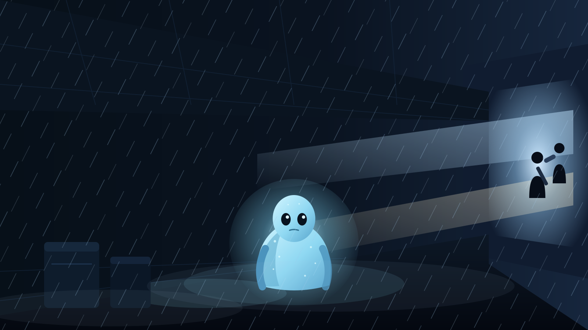

BE HUMAN
检测到拟态伪装开始不稳定。请立刻寻找一个无人的角落，
在彻底变回原型之前保持专注，撑过这段时间。
本次躲藏时长
专注方式
撑过这一轮就安全了。

正在屏住呼吸…
😮💨 伪装暂时稳定，去地球人中间放松一下吧。
休息结束，将自动开始下一轮躲藏。
你刚刚消失了太久，差点被发现！
立刻回到躲藏点继续专注。
选择一个舱位保存当前的地球生活记录，已有记录将被覆盖。
读取后，当前未保存的记录会被舱位中的记录替换。
发现 Bug、有好玩的剧情点子，或想对外星人说点什么？
写给母星的信号都会被收到。
注册一个专属身份代号，你的专注记录、舱位存档将与他人分开保存。